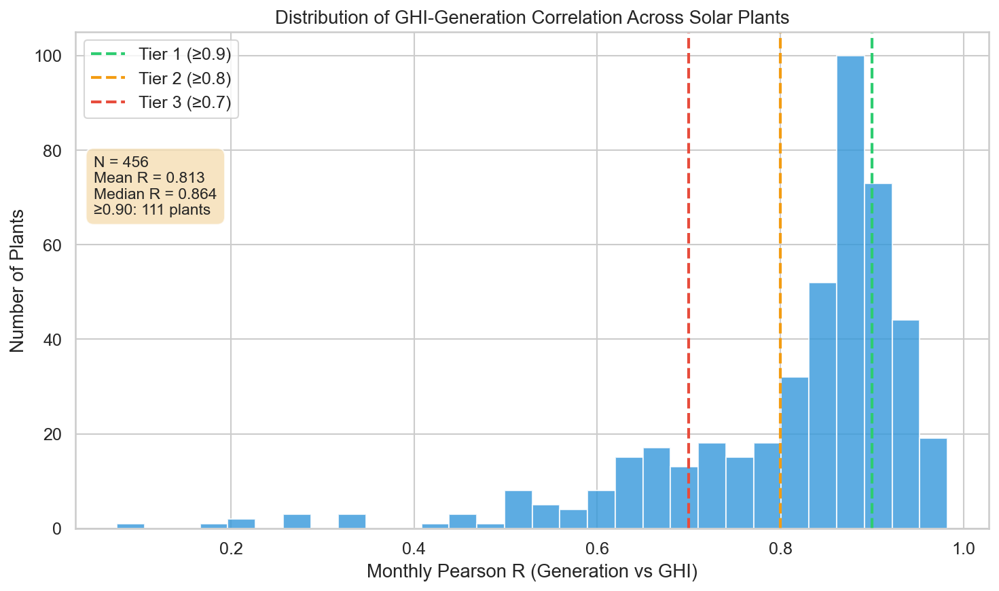
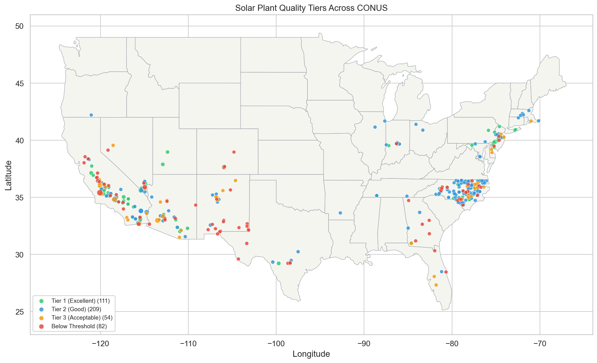

| Rank | Plant ID | Name | State | MW | Pearson R | Spearman ρ | Annual R | Score | Years |
|---|---|---|---|---|---|---|---|---|---|
| 1 | 58490 | Spectrum Solar PV Power Project | NV | 30.2 | 0.982 | 0.985 | 0.999 | 0.959 | 12 |
| 2 | 57455 | NRG Solar Borrego I | CA | 26.0 | 0.962 | 0.955 | 0.984 | 0.949 | 13 |
| 3 | 58030 | Reeves Station Rd East | NJ | 5.5 | 0.954 | 0.958 | 0.994 | 0.941 | 13 |
| 4 | 57650 | Regulus Solar Project | CA | 60.0 | 0.969 | 0.963 | 0.990 | 0.940 | 11 |
| 5 | 57589 | Long Island Solar Farm LLC | NY | 31.5 | 0.944 | 0.950 | 0.988 | 0.936 | 14 |
| 6 | 58973 | White River Solar 2 | CA | 19.8 | 0.965 | 0.962 | 0.992 | 0.935 | 11 |
| 7 | 58660 | Utah Red Hills Renewable Energy Park | UT | 80.0 | 0.971 | 0.971 | 0.995 | 0.935 | 10 |
| 8 | 57657 | Avra Valley Solar | AZ | 25.0 | 0.940 | 0.938 | 0.967 | 0.933 | 13 |
| 9 | 58039 | Axium Modesto Solar | CA | 25.0 | 0.955 | 0.944 | 0.957 | 0.933 | 13 |
| 10 | 58592 | Solar Gen 2 | CA | 163.2 | 0.952 | 0.954 | 0.986 | 0.930 | 11 |
| 11 | 10437 | SEGS I | CA | 20.0 | 0.980 | 0.973 | 0.987 | 0.930 | 8 |
| 12 | 57378 | AV Solar Ranch One | CA | 253.0 | 0.960 | 0.956 | 0.986 | 0.928 | 11 |
| 13 | 59273 | SEPV Palmdale East | CA | 10.0 | 0.961 | 0.961 | 0.976 | 0.928 | 10 |
| 14 | 58417 | Lone Valley Solar Park I LLC | CA | 10.0 | 0.952 | 0.948 | 0.993 | 0.927 | 11 |
| 15 | 59319 | Rock Solid | NJ | 8.0 | 0.947 | 0.961 | 0.995 | 0.924 | 11 |
| 16 | 58626 | Western Antelope Blue Sky Ranch A | CA | 20.0 | 0.947 | 0.947 | 0.976 | 0.923 | 11 |
| 17 | 59634 | Sandstone Solar | AZ | 45.0 | 0.948 | 0.945 | 0.992 | 0.923 | 10 |
| 18 | 58990 | RE Columbia Two, LLC | CA | 15.0 | 0.944 | 0.934 | 0.976 | 0.920 | 11 |
| 19 | 59185 | Jacobstown | NJ | 5.0 | 0.942 | 0.956 | 0.992 | 0.919 | 11 |
| 20 | 59628 | Hanover | NJ | 5.0 | 0.951 | 0.958 | 0.992 | 0.918 | 10 |
| 21 | 59413 | Corcoran Solar 2 | CA | 19.8 | 0.968 | 0.964 | 0.935 | 0.917 | 10 |
| 22 | 58419 | Victor Dry Farm Ranch B | CA | 5.0 | 0.945 | 0.941 | 0.974 | 0.916 | 10 |
| 23 | 59237 | Lone Valley Solar Park II LLC | CA | 20.0 | 0.937 | 0.933 | 0.982 | 0.915 | 11 |
| 24 | 59450 | Decatur Parkway Solar Project, LLC | GA | 80.0 | 0.935 | 0.949 | 0.985 | 0.914 | 10 |
| 25 | 58398 | Heber Solar | CA | 10.9 | 0.945 | 0.936 | 0.932 | 0.914 | 11 |
| 26 | 57256 | PA Solar Park | PA | 10.1 | 0.923 | 0.922 | 0.979 | 0.913 | 13 |
| 27 | 58262 | Badger 1 | AZ | 14.8 | 0.924 | 0.919 | 0.964 | 0.913 | 12 |
| 28 | 58882 | Mercer County Community College | NJ | 7.5 | 0.923 | 0.933 | 0.973 | 0.910 | 12 |
| 29 | 58202 | RE Victor Phelan Solar One LLC | CA | 20.0 | 0.918 | 0.919 | 0.968 | 0.909 | 12 |
| 30 | 58500 | RE Rio Grande Solar LLC | CA | 5.0 | 0.921 | 0.910 | 0.967 | 0.908 | 12 |
Plant generation: EIA API v2 facility-fuel endpoint
(electricity/facility-fuel/data), filtered to fuel2002 = SUN,
monthly frequency. The generation field is net generation in MWh
(post-inverter, after parasitic and station-service losses are subtracted).
Multiple generators within the same plant-month are summed, then duplicate
rows on (plant_id, year, month) are dropped before merging.
Plant capacity and location: EIA API v2
operating-generator-capacity endpoint
(electricity/operating-generator-capacity/data), pulled for the final
month of the analysis window. nameplate-capacity-mw is summed across
every solar generator at the plant. Latitude and longitude come from the same
response.
Solar resource: NREL NSRDB v4 (PSM aggregated GOES product where available, MSG fallback otherwise) at the plant lat/lon. Hourly GHI (W/m²) is summed within each calendar month to give a monthly total in Wh/m². Years 2010 through 2024 are pulled for every plant.
Plants must have AC nameplate capacity at or above 5.0 MW, valid lat/lon within CONUS bounds, and at least 10 years of EIA generation history within the analysis window (2010-2024).
Generation and GHI are inner-joined on
(plant_id, year, month). Plants without overlapping records
in both feeds are dropped. Each plant's row set is then handed to the
metric routine, which produces one row of statistics per plant.
Monthly Pearson R = scipy.stats.pearsonr applied to paired (monthly GHI, monthly normalized yield) values, where normalized yield is generation_MWh divided by AC capacity_MW. Captures how tightly month-to-month output tracks month-to-month irradiance.
Spearman ρ = scipy.stats.spearmanr on the same paired values. Rank-based, so robust to outliers and any monotonic but non-linear response.
Annual Pearson R = Pearson on yearly sums of generation against yearly sums of GHI. Smooths short-term noise; needs at least 5 years to compute.
Performance ratio (PR) = monthly generation_MWh divided by (capacity_MW × monthly GHI in kWh/m²). PR is a unitless measure of how much of the resource the plant converts to electricity. The pipeline reports mean PR and CV of PR (standard deviation / mean), which captures temporal stability rather than absolute level. PR magnitudes can look high for plants with large DC overbuild relative to their reported AC nameplate, so the CV is the more reliable comparison signal.
R² = monthly Pearson R squared.
Each plant gets a single 0-to-1 score combining the metrics:
If a metric can't be computed for a plant (for example, fewer than five years for the annual R), its weight is dropped and the remaining weights are renormalized.
Tiers are assigned solely on monthly Pearson R: Tier 1 at R ≥ 0.9, Tier 2 at R ≥ 0.8, Tier 3 at R ≥ 0.7, otherwise "Below Threshold." Plants where Pearson R cannot be computed are tagged "Insufficient Data."